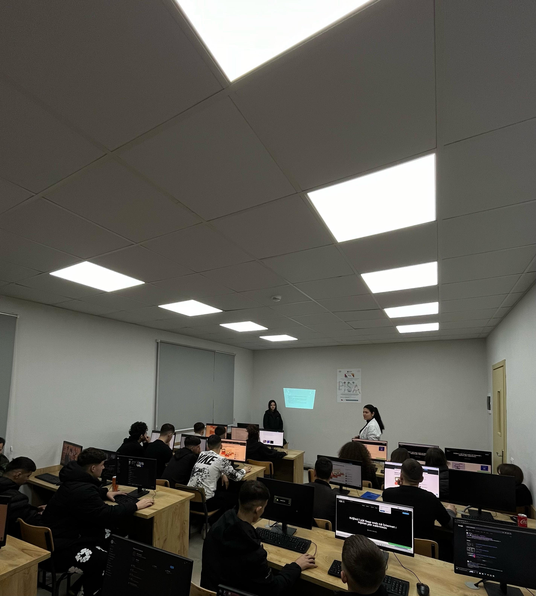
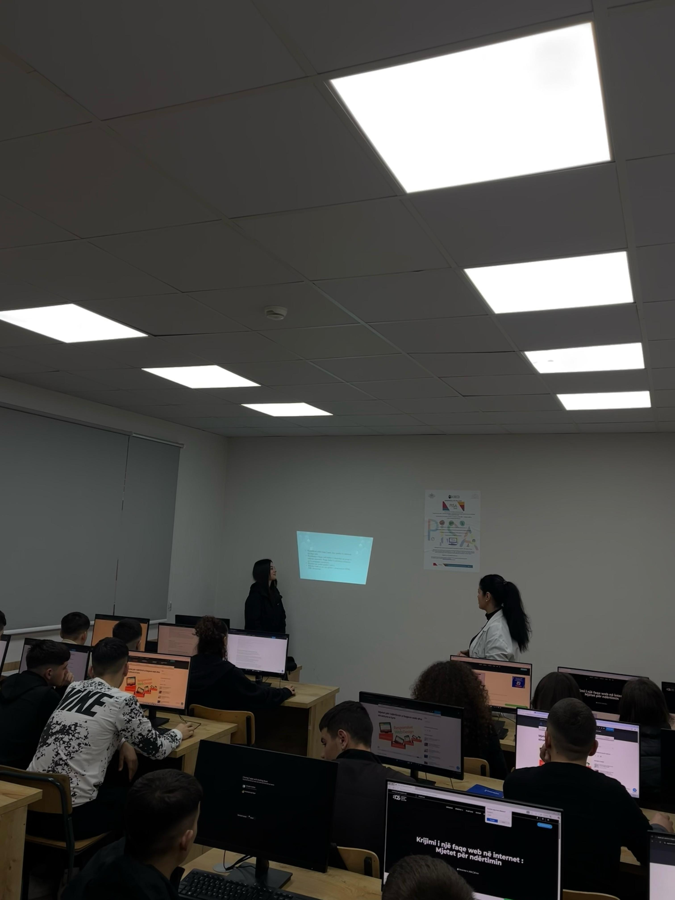
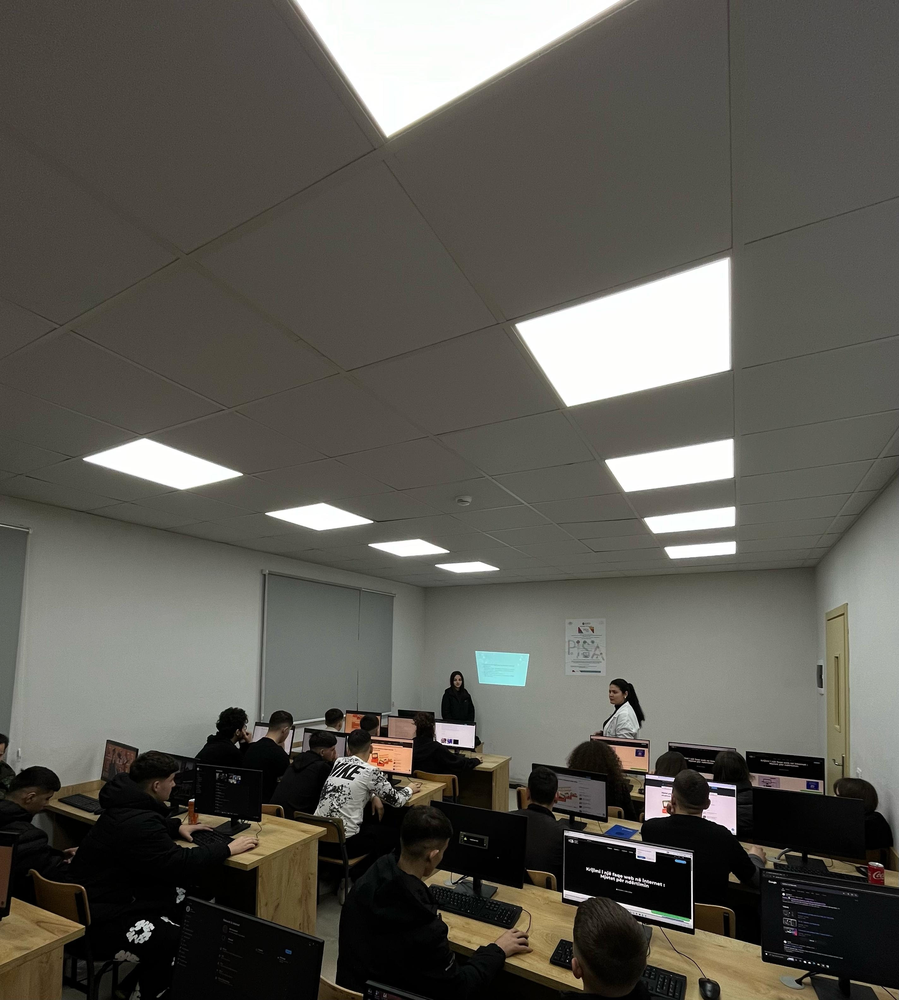
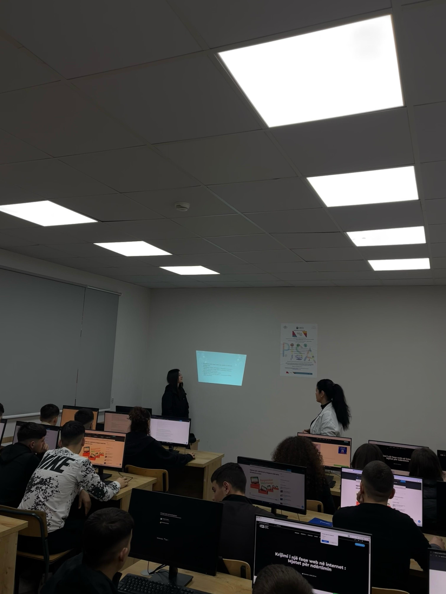

Restoranti "Zoja Randë" është një shembull i gjallë se si një ëndërr e vogël mund të kthehet në një realitet të madh kur pasioni dhe bashkëpunimi takohen. Fillimisht, ky projekt nisi si një iniciativë modeste nga nxënësit e klasës XIC të gjimnazit “Gramoz Palushi”, të cilët, të frymëzuar nga dashuria për traditën dhe gatimin shqiptar, vendosën të krijonin një restorant që pasqyronte vlerat dhe kulturën e tyre.
Emri "Zoja Randë" nuk është zgjedhur rastësisht; ai lidhet ngushtë me traditën e lashtë shqiptare e cila është trashëguar brez pas brezi dhe të cilën ne duam ta përcjellim te cdo klienti i yni, nëpërmjet ushqimit dhe mikpritjes sonë.
Projekti mori jetë falë përpjekjeve të gjithanshme të nxënësve, të cilët, me një ndarje të mirëfilltë të detyrave, kontribuan secili sipas aftësive të veta. Disa u morën me hulumtimin dhe përzgjedhjen e recetave tradicionale, të tjerë me dizajnin e menusë dhe ambientit, ndërsa një grup tjetër organizoi menaxhimin dhe logjistikën e restorantit. Pa dyshim, një rol kyç në suksesin e këtij projekti kishin edhe mësuesit, të cilët udhëzuan dhe mbështetën nxënësit në çdo hap, duke e kthyer këtë iniciativë nga një ide e thjeshtë në një biznes funksional.
I vendosur në një nga zonat më të bukura Tiranës, restoranti shpejt fitoi vëmendjen e banorëve dhe vizitorëve, jo vetëm për ushqimin e shkëlqyer tradicional, por edhe për atmosferën e ngrohtë dhe mikpritëse. "Zoja Randë" u bë një vend ku klientët nuk shkonin vetëm për të shijuar një pjatë të mirë, por për të përjetuar një histori, një trashëgimi dhe një frymë bashkëpunimi e pasioni.
Ky projekt është një shembull se si bashkëpunimi, përkushtimi dhe dashuria për kulturën mund të krijojnë diçka të bukur dhe një trashëgimi për brezat e ardhshëm.
Puna jonë në grupe në matematikë
Puna jonë në informatikë
 


